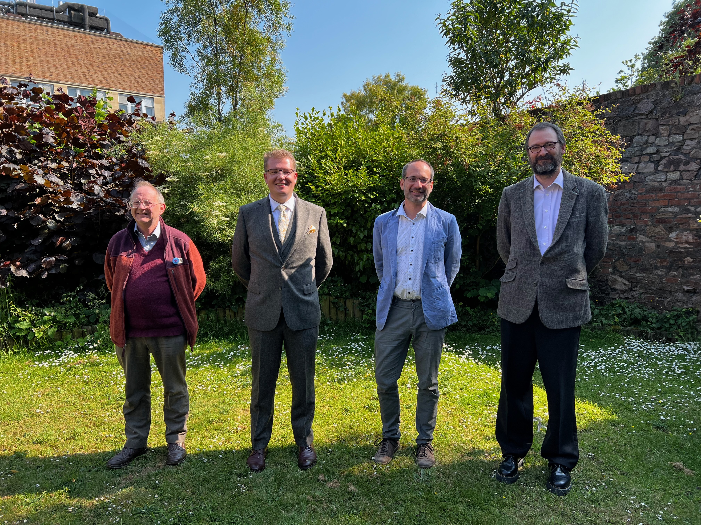
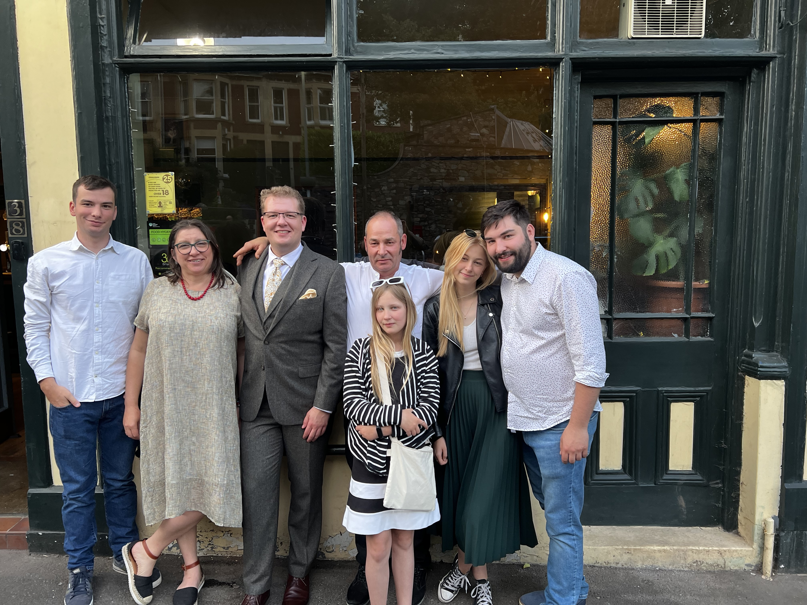

Back to Blog
7th June 2023
Below I share the message which formed the dedication in my PhD thesis. It mentions many people whom I wanted to thank at the time and to whom I continue to remain very grateful. I think it's an important message for me, which is why I continue to share it with the wider world.Ad maiorem Dei gloriam}
Although I claim to be the author of this thesis, I would have never been able to do it on my own. I owe my gratitude to a great number of people and here I will do my best to recall and name as many of them as possible.
First and foremost, I would like to thank my two supervisors: Prof. Alan Champneys and Dr Robert Szalai. I still remember the very first remote meetings we had in late 2017, the first in-person visit in Bristol, first visit to Scotland and the first supervision meeting. Throughout this time both Alan and Robert remained incredibly welcoming, supportive (but honest!) and dedicated to this project, offering countless hours of their time, wisdom and skills to me. I thoroughly enjoyed the times when we had to scratch our heads, every joke we shared and every puzzle we solved. It was an enormous pleasure to have you by my side as I was placing the baby steps as a researcher and I have learnt a great deal from you. Thank you.
I also direct a big share of gratitude to my sponsors, UKRI EPSRC, but more significantly R&A Rules Ltd. In particular I wish to thank Prof. Steve Otto, Dr Andrew Johnson, Dr Kristian Jones, Lorna Belford and Dr Mark Grattan, but my appreciation extends to a much wider group of technicians and administrative staff, whom I had a pleasure to meet in Kingsbarns. I am, undoubtedly, grateful for the funding and the opportunity with which I was provided, but even more so I am thankful for the fact that I was able to call the whole team my ``industrial partners'' throughout this project. I have seen a great interest in my work throughout this doctorate, with many successful collaborations, very useful insights and pointers, challenging questions and industrial anecdotes. I hope our paths will cross again, as that would be only a pleasure for me.
It has now been over 10 years since I have arrived in the UK and my parents continue to not-speak English. Hence, I will thank my family in my native Polish language in the following paragraph...
Ogromne słowa podziękowania kieruję również do mojej rodziny – rodzicom Marii i Waldemarowi, braciom Jankowi i Adamowi oraz siostrze Zosi. Dziękuje za wsparcie okazane nie tylko w czasie tego doktoratu, ale podczas wielu lat nauki, zarówno w Polsce jak i w Wielkiej Brytanii. Wiem, że nie jest Wam łatwo ze mną, wiem, że mój humorek i upór nie pomagają. Niemniej jednak, doceniam bardzo Wasze wsparcie. Wiedzcie proszę, że bez Waszej pomocy ta pracy by nigdy nie powstała. Nie zapominam tutaj o dalszej rodzinie -- babciach, dziadku, ciociach, wujkach, kuzynostwie… To zaszczyt być członkiem tak dużej i wspierającej się wzajemnie rodziny!
The whole adventure of my studies in the UK began with a life-changing scholarship from the British Alumni Society, which runs mostly due to the hard work of Mrs Marzena Reich. To this day I appreciate the opportunity this scholarship created in my life and am very grateful for the support I received throughout. Marzena & The BAS Team -- thank you!
I arrived in Bristol for my PhD from elsewhere, yet I was welcomed very warmly right from the beginning. My thanks go to many staff in the department, including (but not limited to!) Dr David Barton, Dr Oscar Benjamin, Dr Cameron Hall, Prof. John Hogan, Dr Martin Homer, Dr Chanelle Lee and Prof. Tony Mulholland. I always appreciate your support, guidance and advice. Big shout-out also to the whole Buncaer, a wonderful PhD community from the Engineering Maths department, for the great period of research exchange, laughs, beers and everything else -- thank you Aaron, Ana, Andrew, Chris, Dan, Fahad, Fanqi, Irene, John, Kit, Liam, Mark, Natasha, Ricky, Rob, Simon, Tom, Will and Zohar. Last, but not least, thank you to Riku and Jessica -- two students who worked with me on projects related to this thesis and made me look at it all from different, new angles.
Among that big crowd, a few names deserve a particular mention. Firstly, thank you to Sophie Landon and Noah Cheesman, simply for always being around. Thank you to my dear officemate Seeralan Sarvaharman. Shree rescued my computer on a number of occasions and was a great support throughout the different stages of my PhD, mostly due to a similar niche sense of humour. And massive thanks to Ben Collins, my partner in many crimes. The countless swims, codewords and pub trips kept me functioning, while the whiteboard sessions supported my work greatly. I am glad we were sat so close to each other throughout this period.
The list of friends supporting me reaches far beyond the walls of Ada Lovelace Building. Firstly, I'd like to thank Francesca here, who has been a help and support through high and low, feeding me dinners, chocolates, providing me with many forms of entertainment and care. I'd like to thank many dear friends of the University Catholic Chaplaincy, for food, company, runs and walks or film nights and many, many more. Thank you to my lovely friends from the good old Oxford days, who never let me forget about them and never forget about me. Whenever we meet it feels like we never stopped being young, inexperienced undergrads... Thank you to the Benedictine community of Glenstal Abbey, who offered a place of refuge to me whenever I was becoming overstressed, overworked or panicked. Many thanks to my lovely friends back in Poland, especially those who have now known me for over 20 years from Łejery school. They continue to remain close, check up on me and never give up believing in me -- as we were once told ``we're not interested in the easy tasks!''. Thank you to the students I came across, I thoroughly enjoyed teaching you and many conversations we had inspired me to think in the ways I would not have otherwise considered. Thank you to many other friends and colleagues, from Clifton Cathedral Choir or St. Bernadette's Catholic Secondary School, who gave me things to do outside of the University, kept me sane and busy and gave me many reasons to laugh and do something good and exciting.
If I were to name every single person that helped me to get to where I am today, this thesis would have doubled in size. If I did not mention you by name here, this is not because I do not appreciate your help or have not noticed the impact of your presence -- it is purely, and sadly, a testament to my poor memory and writing skills. I have been truly blessed with the many wonderful, kind and helpful people around me and I thank each and every one of you for being a part of it.
Thank you one and all. Lots of love,
Stasiu


σβ
Last updated: 15th May 2025
Back to Blog